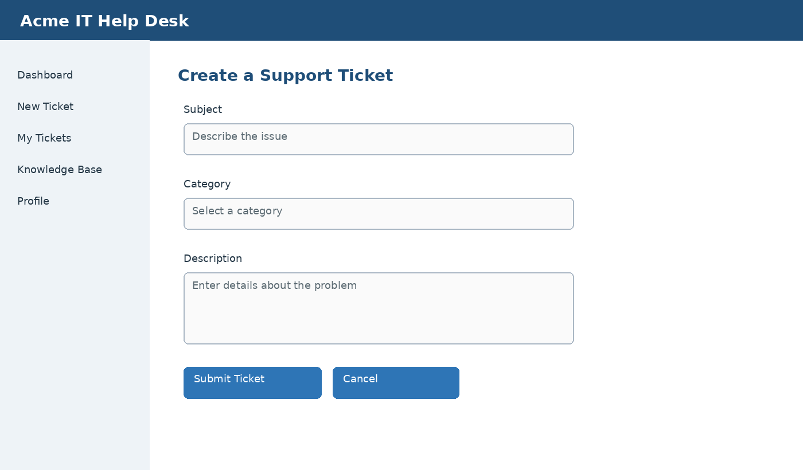

Create a Support Ticket
Create a ticket when you need assistance from the IT support team.
- Select New Ticket.
- Enter a short, descriptive subject.
- Select the most appropriate category.
- Describe the issue, including relevant error messages and the steps that led to the problem.
- Select Submit Ticket.

Figure 2. Create a support ticket
Tip: Include screenshots or other supporting files when they will help the support team understand the issue.